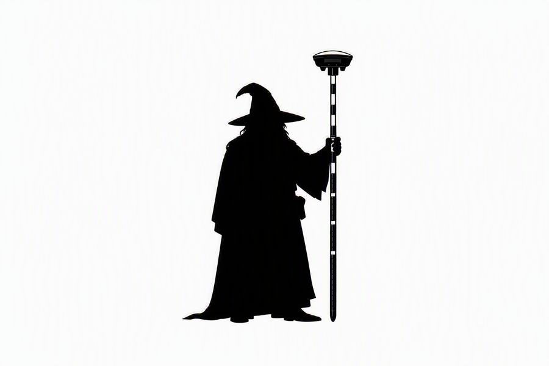

GPS Staff
RTK Survey Instrument
Radio
Semtech SX1262 · GFSK
✦ The GPS Staff Wizard
Original mascot of the project. Retired from the home screen in favour
of something more boardroom-appropriate. He refused to leave entirely.
His staff still points skyward. So does ours.
Built with
ESP-IDF · LVGL 9.x · FreeRTOS · u-blox UBX · STM32 HAL
FatFS · SX1262 GFSK · OS Net NTRIP · ETSI EN 300 220
GM4AJK · 2026
GPS STAFF · PCB v1.0 · fw 0.1.0